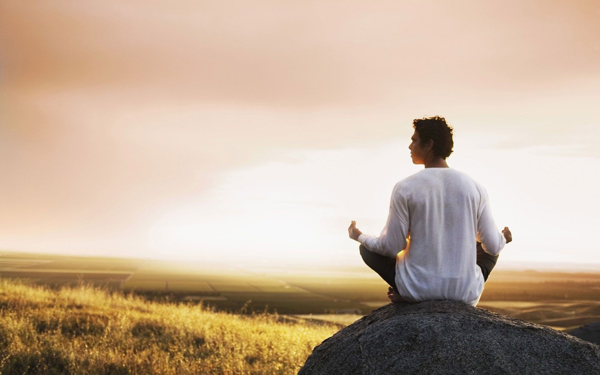
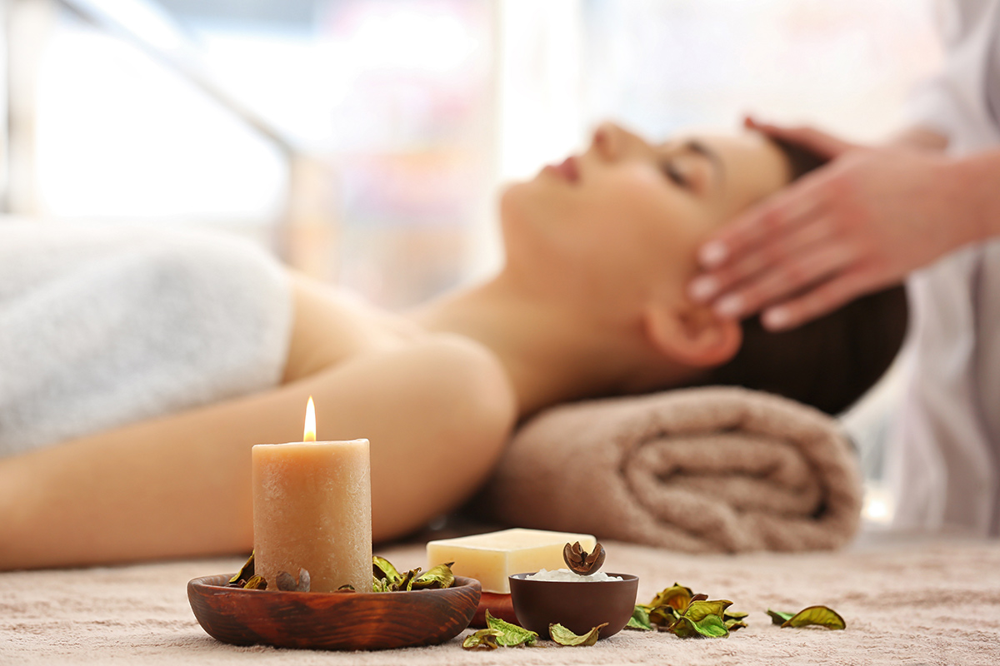

With a mission to self-heal with nature, Sthiti offers yoga classes guided by experienced and passionate instructors who are committed to helping you strengthen your mind and body. Classes are held twice a day for each day of the week. The first session of the day is held during dusk, allowing you to start the day early feeling refreshed and energised. Integrating this practice into your early morning will give you a headstart feeling motivated to tackle the day ahead. The second session is held during dawn, focusing on unwinding for the day and letting go of any mental and physical stresses.
outdoor habitat.
Sthiti holds the belief that forming a strong connection to nature is key to leading a healthy lifestyle. Yoga classes are therefore held outdoors set on a mountain top. Practicing outside allows you to be completely free of distractions and focus on aligning your mind with nature. The peaceful environment gives you the opportunity to disconnect from the heavily-connected world and notice your natural surroundings. Beside the daily spectacular view of the sunrise and sunset from the mountain top, there also lies the added benefit of soaking up plenty of vitamin D naturally. These practices will awaken your senses and give you the ability to apply these throughout your day, training you to be present in all aspects of your life.

meditation.
Sthiti also offers meditation sessions which provides multiple benefits for your mind. Meditating gives you a break from the daily hustle and bustle of life. It has proven to be an effective stress reliever and helps individuals enhance their self-awareness. There are also multiple health benefits such as improving sleep quality, helps control pain and decreases blood pressure. At Sthiti, these sessions are held outdoors in a quiet and peaceful area where you can practice your meditation in pure tranquility accompanied by only the sounds of nature.

massage.
The center provides massage services, specialising in hot stone massages and aromatherapy services. Hot stone massage involves the usage of heated stones and placing them on specific points of the body to relieve muscle tension. This practice allows muscle relaxation and provides a soothing and comforting feeling for the body.
Aromatherapy massage involves the use of massage oil or lotion containing essential oil, and which are absorbed by the body during the massage. Aromatherapy massages have the benefit to make you feel relaxed or energised based on the oils that are used.